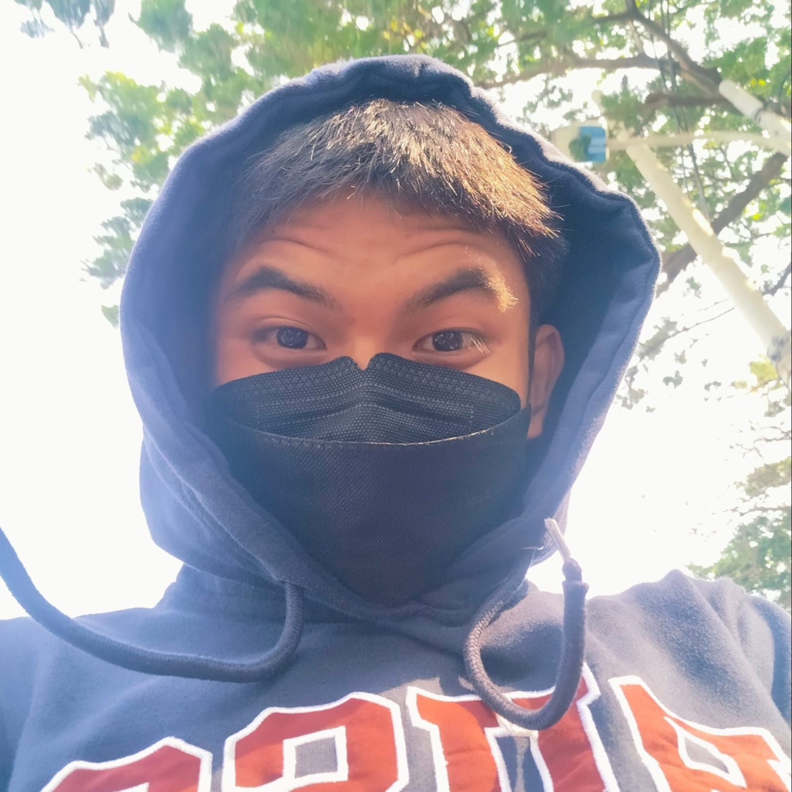

Hi,
I'm Aldo Alviano
Web Designer
Contact

Saya menjalani Praktik Kerja Lapangan (PKL) di PT Milenia Multivisi selama 6 bulan. Selama masa PKL, saya berkesempatan untuk:
Pengalaman ini memberikan saya wawasan dan keterampilan penting yang memperkuat minat saya di bidang web development.
Anda dapat mengunduh CV saya pada tautan di bawah ini:
Download CV